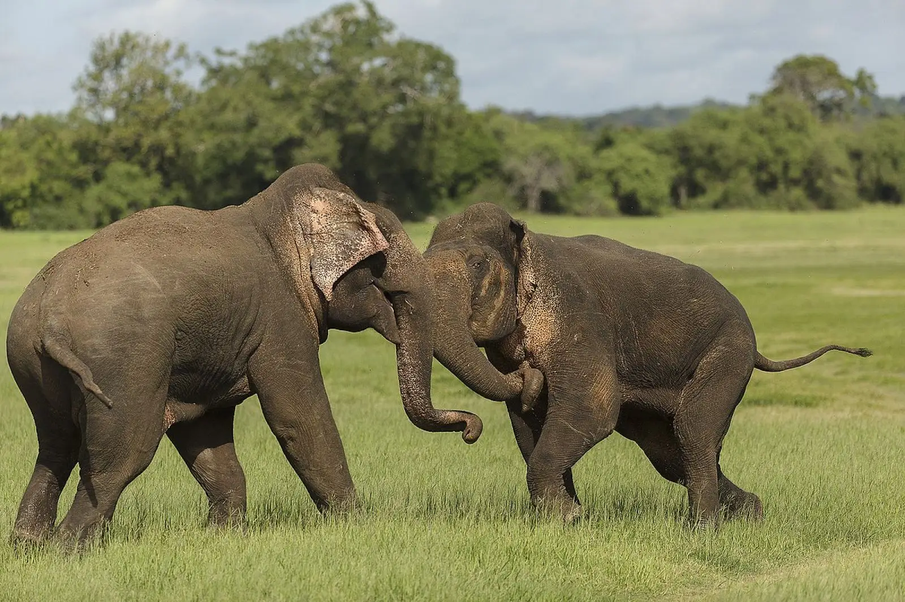

Зовнішній вигляд
Слон — ссавець роду Слон (Elephas ) з ряду хоботних (Proboscidea). Це друга за величиною наземна тварина.
Особливості будови
- Довжина тіла: 5,5—6,4 м, висота в загривку: 3 м, маса: 3—5 т.
- Нормальна температура тіла у слона — 35,9 °C.
- Характерною рисою є те, що бивні є лише у самців, а максимальна довжина, до якої ці бивні виростають — це 1,5 м і важать 20—25 кг.
